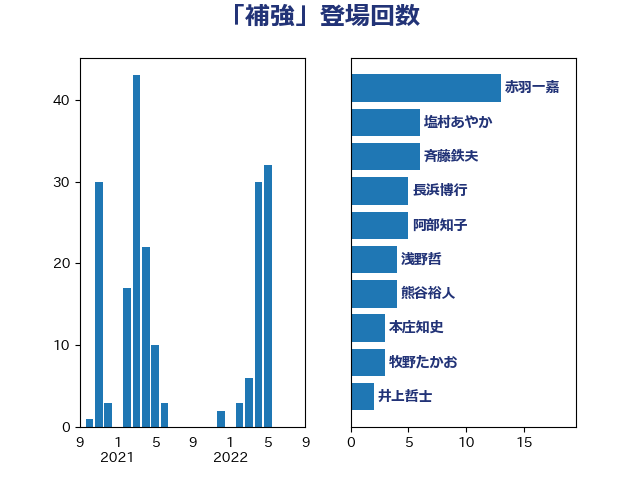

単語「補強」

| 赤羽一嘉 | 公明党 | 13 回 |
| 塩村あやか | 立憲民主党 | 6 回 |
| 斉藤鉄夫 | 公明党 | 6 回 |
| 長浜博行 | 無所属 | 5 回 |
| 阿部知子 | 立憲民主党 | 5 回 |
| 浅野哲 | 国民民主党 | 4 回 |
| 熊谷裕人 | 立憲民主党 | 4 回 |
| 本庄知史 | 立憲民主党 | 3 回 |
| 牧野たかお | 自由民主党 | 3 回 |
| 井上哲士 | 日本共産党 | 2 回 |
| 平口洋 | 自由民主党 | 2 回 |
| 浜口誠 | 国民民主党 | 2 回 |
| 深澤陽一 | 自由民主党 | 2 回 |
| 田村憲久 | 自由民主党 | 2 回 |
| 竹内真二 | 公明党 | 2 回 |
| 野田聖子 | 自由民主党 | 2 回 |
| 青木愛 | 立憲民主党 | 2 回 |
| 高橋千鶴子 | 日本共産党 | 2 回 |
| 三ッ林裕巳 | 自由民主党 | 1 回 |
| 中曽根康隆 | 自由民主党 | 1 回 |
| 井上信治 | 自由民主党 | 1 回 |
| 大塚耕平 | 国民民主党 | 1 回 |
| 宮内秀樹 | 自由民主党 | 1 回 |
| 小泉進次郎 | 自由民主党 | 1 回 |
| 山口壯 | 自由民主党 | 1 回 |
| 山添拓 | 日本共産党 | 1 回 |
| 岡本あき子 | 立憲民主党 | 1 回 |
| 平井卓也 | 自由民主党 | 1 回 |
| 打越さく良 | 立憲民主党 | 1 回 |
| 林芳正 | 自由民主党 | 1 回 |
| 梶山弘志 | 自由民主党 | 1 回 |
| 津島淳 | 自由民主党 | 1 回 |
| 田村貴昭 | 日本共産党 | 1 回 |
| 石川昭政 | 自由民主党 | 1 回 |
| 落合貴之 | 立憲民主党 | 1 回 |
| 西村康稔 | 自由民主党 | 1 回 |
| 近藤和也 | 立憲民主党 | 1 回 |
| 野上浩太郎 | 自由民主党 | 1 回 |
| 高階恵美子 | 自由民主党 | 1 回 |
| 齋藤健 | 自由民主党 | 1 回 |